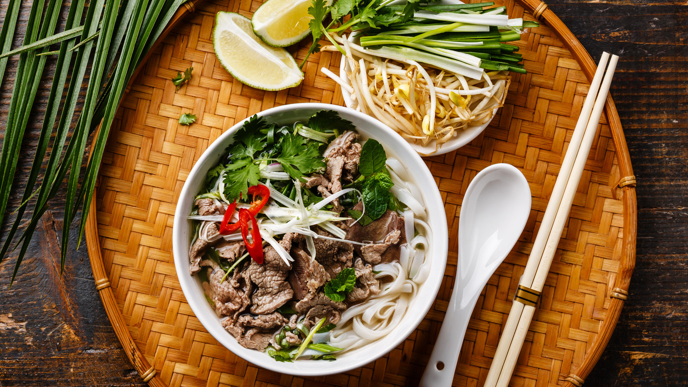
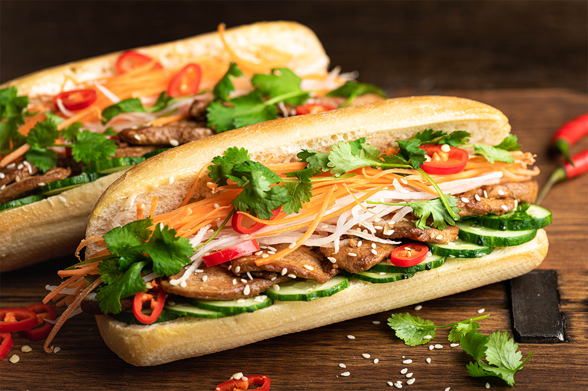

Phở
A famous Vietnamese noodle soup made with flavorful broth, rice noodles, herbs, and meat.
A COUNTRY FULL OF LIFE, CULTURE, AND FLAVOR
Welcome to Vietnam, a beautiful country filled with rich traditions, delicious food, breathtaking landscapes, and warm-hearted people. For me, Vietnam is more than just a country. It is where I grew up, where my family is, and where many of my childhood memories began.
Discover VietnamA TASTE OF VIETNAM
One of the things I miss most about Vietnam is the food. In my personal opinion, Vietnamese food is the best in the world! Its wonderful flavors, fresh ingredients, and variety make every meal special.

A famous Vietnamese noodle soup made with flavorful broth, rice noodles, herbs, and meat.

A delicious Vietnamese sandwich combining a crispy baguette with savory fillings and fresh vegetables.
Fresh spring rolls wrapped in rice paper and commonly filled with vegetables, herbs, noodles, and shrimp or pork.
Strong coffee often served with sweetened condensed milk, creating a rich and memorable flavor.
MY HOMETOWN
Ho Chi Minh City, also known as Saigon, is where I grew up. It is a lively city filled with busy streets, motorcycles, colorful markets, local restaurants, and exciting everyday activities.
The city is especially known for its street food, energetic atmosphere, and mix of modern buildings and historic landmarks. It is a place where visitors can experience the everyday rhythm of Vietnamese life.
Because this is the city where my childhood memories began, it will always have a special place in my heart.
TRADITIONS AND VALUES
Vietnamese culture is shaped by family, respect, hospitality, traditions, language, and a strong connection to history.
Tết is one of Vietnam's most important celebrations. Families welcome the new year, visit relatives, prepare special foods, and share good wishes.
Family plays an important role in Vietnamese life. Respecting parents and elders and spending time together are meaningful traditions.
Vietnamese hospitality is reflected in welcoming guests, sharing food, and showing kindness to others.
BEAUTY FROM NORTH TO SOUTH
Vietnam offers a wonderful mix of natural scenery, historic destinations, and vibrant cities.
Vietnam's capital is known for its history, traditional streets, and rich food culture.
Famous for its beautiful emerald waters and dramatic limestone islands.
A charming historic town known for lanterns, traditional architecture, and riverside views.
MORE THAN JUST A PLACE
Living far away has made me appreciate my home country even more. I miss the food, the celebrations, the busy streets, and especially the moments spent with my family.
Vietnam gives me a feeling of happiness, pride, gratitude, and nostalgia. Even when I am far away, the memories I made there remain close to my heart.